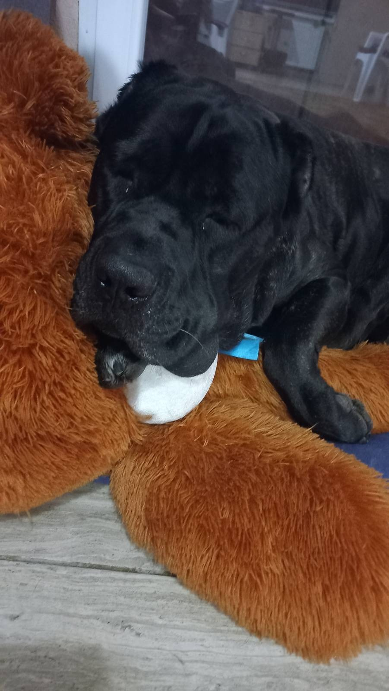

Моє резюме
Особиста інформація
- Пащенко Дмитро Валерійович
- Дата народження 09. 09. 1985
- Контактна інформація: +38 (098) 634 37 40 / pdv240222@i.ua
- Місце проживання - Дніпро
Освіта
- Спеціаліст
- Національна металургійна академія України
-
Факультет економіки/менеджменту та адміністрації (випуск 2012 року)
Досвід роботи
-
Вересень 2024 – по т.ч. - Головний спеціаліст з коксохімічного
виробництва Дирекції з якості та технології ПрАТ «ДМЗ» (Група DCH)
здійснює свою діяльність у сфері виробництва та експорту коксохімічної
продукції та металопродукції (після демобілізації повернення на
попереднє місце роботи)
- Жовтень 2022 – серпень 2024 - служба в Збройних Силах України.
-
Листопад - жовтень 2022 - Головний спеціаліст з коксохімічного
виробництва Дирекції з якості та технології ПрАТ «ДМЗ» (Група DCH)
здійснює свою діяльність у сфері виробництва та експорту коксохімічної
продукції та металопродукції
-
Квітень 2015 – жовтень 2020 Головний спеціаліст з технології та якості
виробничо-технічного відділу виробництва коксу та побічних продуктів
ПрАТ «ДМЗ» (Група DCH) здійснює свою діяльність у сфері виробництва та
експорту коксохімічної продукції та металопродукції
Хобі
- Будівництво
- Прогулянки з улюбленим собакою
